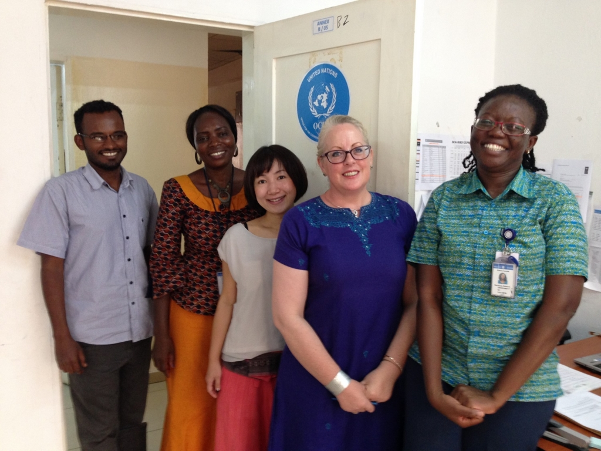
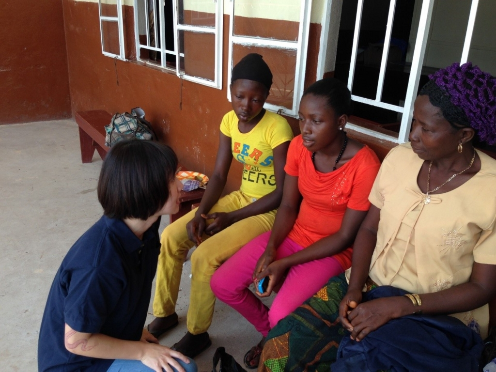
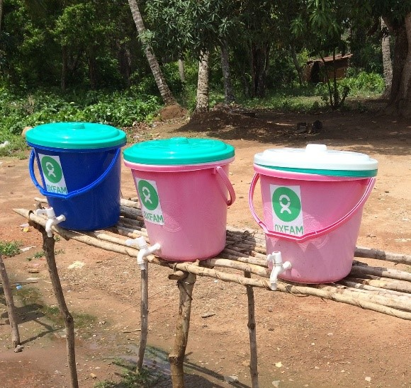
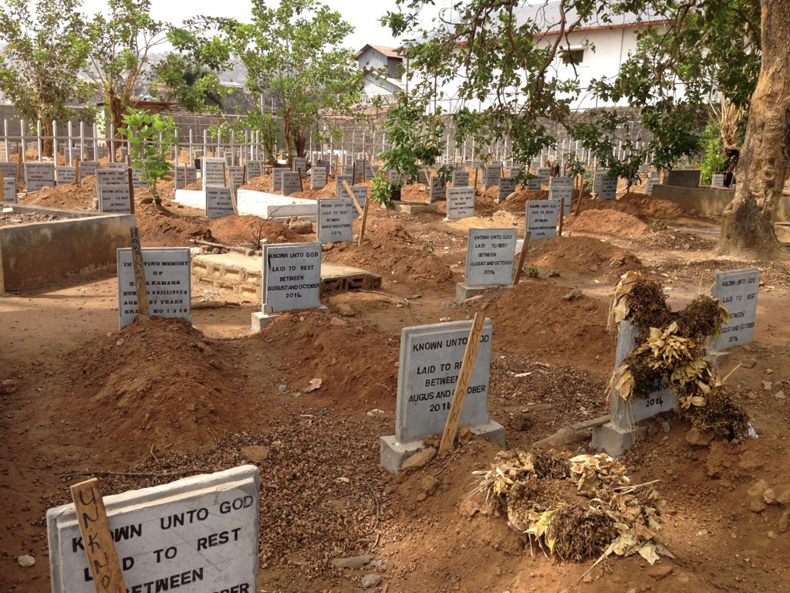
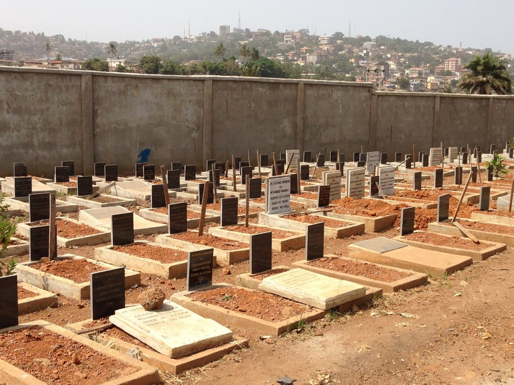
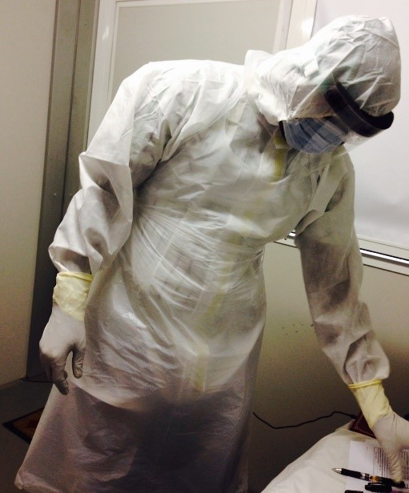
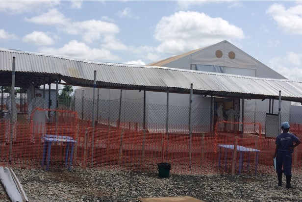
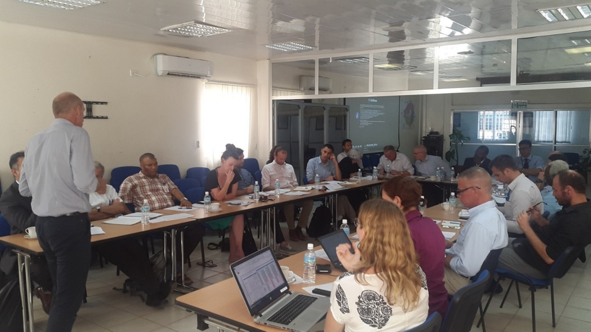

OCHA日本人職員フィールドレポート（高尾裕香）
国連人道問題調整事務所・人道問題調整官 高尾裕香さん
～人道危機に備えて、国際社会の協調が重要～

ニューヨーク市立大学で政治科学学士、ロンドン大学にて暴力、紛争と開発コースで修士号を取得。ウガンダでの村落開発（青年海外協力隊）、ハイチでの震災後の緊急・復興支援（NGO）、スーダン・ダルフール（OCHA/JPO）での緊急支援を経て2015年6月から現職。
シエラレオネ：迅速な資金供給とコーディネーションでいのちを救う

世界人道サミットで議論されるテーマの一つが資金の多様化と最適化です。人道支援のための資金繰りはここ10年で困難を極めています。現在世界が人道支援に必要とする資金は15年前と比べて12倍になったと言われており、2016年には不足額は150億ドルにも上ります。資金が減りニーズが増えていく中、人道支援団体にとって資金元の多様化（アラブ諸国など、従来ドナーではなかった国々を巻き込むなど）、また問題の根本的な解決（防災に力を入れるなど）や人道支援の効率化を図ることが重要になります。
災害や人道危機が起きた場合、迅速な人道支援のため、人道支援機関は早急に資金を調達する必要があります。OCHA（国連人道問題調整事務所）が管理する中央緊急対応基金（Central Emergency Response Fund: CERF）は、そんな時に活用できる運用資金の一つです。こうした基金は自然災害の直後の食糧・水・仮設住居の支援に充てられるほか、難民キャンプに住む子供たちのための医療や栄養支援などに利用されます。
シエラレオネでは、CERFから資金がエボラ初期対応のためにUNICEF（国連児童機関）、WHO（世界保健機構）、WFP（世界食糧計画）に支給されました。UNHAS（WFPが管理する国連人道支援航空サービス）はこの資金を使用するにあったって優先順位が高いと判断された活動の一つです。
メディアでは医薬品や水、食べ物などの直接救命に結びつく支援が報道されがちで、ロジスティクス（輸送）にはなかなか注目が集まりません。しかし、シエラレオネのように物理的なアクセスが難しい地域が多い国では、人材や支援物資を輸送するサービスが欠かせません。輸送手段がなければ、迅速で効果的な支援は不可能なのです。
例えば、医療支援が絶対的に必要な人々がいたとして、医者、医薬品と医療施設が必要になります。この３つを揃えるだけではこの人々が助かる保証はありません。なぜなら、これらの３つが人々のもとに届かない限り、支援が始まらないからです。ロジスティクスは支援が支援を必要としている人々のもとへ届くよう、重要な橋渡しをする役割を担っています。
シエラレオネでは126万ドルがUNHASに支給され、医療従事者を含めた人道支援スタッフと、人道支援に必要な物資の輸送に使われました。複数の航空会社がシエラレオネへの就航を一時停止したため、渡航・輸送のオプションが減る中、UNHASは人・物を輸送しただけでなく、限られた資金を輸送ではなく実際の人道支援に使うことを可能にしたのです。迅速な資金供給と統制の取れた支援により、シエラレオネは2015年11月7日に最初のエボラ終息宣言を迎えることができました。

私がエボラ対応のためシエラレオネに赴任したのは2015年の6月で、すでにエボラ感染のピークは過ぎていました。ピーク時の2014年11月には一週間で500件以上も感染が確認されていたのに比べ、到着時は週に10～15件程度。
しかし、ピークは過ぎたにも関わらず、行く先々に手洗い場が設けられ、体温チェックを徹底していたのを覚えています。国連機関、NGO、関連省庁、路上検問所のみにとどまらず、スーパーマーケットやレストランでもです。大統領の非常事態宣言により、感染拡大防止のため１年以上スーパーマーケットやレストランは18時に閉店が義務付けられ、人が集まるイベントやスポーツはすべて禁止されていました。夜間にはシエラレオネの警察・軍隊の設置した検問所が多く設置され、各車両に感染者がいないかどうか、または感染の疑いのある遺体を運んでないかをチェックしていました。
シエラレオネでは様々な埋葬にまつわる伝統的儀式があり、それらは死者をあの世に導くためにとても重要だと考えられています。しかしエボラ犠牲者の遺体は感染力が非常に強いため、死因に関わらずすべての遺体を安全な方法で埋葬することが義務付けられ、伝統的儀式を継続することはできなくなりました。

例えば、シエラレオネでは埋葬前に家族が遺体を洗うことが習慣となっていましたが、感染の危険が非常に高いため許されませんでしたし、早急に埋葬するために、各宗教の指導者を招いて家族で埋葬に参加することも多くのケースでできませんでした。愛する家族が適切な儀式を受けられずボディーバッグ（遺体袋）に入れられ連れていかれる、それは家族にとって受け入れがたい現実だったため、病気になった家族を隠したり、遺体を隠して各家庭で埋葬をすることが多くありました。
エボラ感染ピーク時の混乱により、今でも多くのエボラ犠牲者の家族は、彼らの家族がどこに埋葬されたのかわからない状態です。このように、エボラ出血熱は命を奪っただけでなく、人々の生活に様々な影響を与え、心に傷を残しました。
エボラ感染者と接触した疑いのある人は、感染の危険がある期間が終わるまで21日間隔離病棟・施設で暮らさなければなりません。私自身も高熱で国連クリニックに搬送された際、隔離ユニットに入れられ、エボラ検査で陰性が確認されるまで2日間拘束されました。感染のリスクは低いとわかっていても、防護服に身を包んだスタッフが血液採取に来た際は私でも緊張しました。エボラ感染が蔓延していた地域では、突然宇宙人のような、顔も見えない防護服に身を包んだ人たちが訪れ
る、そのことだけでも恐ろしい出来事だったでしょう。
シエラレオネといえば、日本では残虐な内戦のあった国として記憶されているかもしれません。2002年に終結した10年以上にわたる内戦は、何万人という犠牲者を出しただけではなく、インフラや経済を破壊・疲弊させました。エボラ出血熱が最初に報告された2014年5月、シエラレオネはいまだ内戦の爪痕から回復していた時期であり、医療体制は脆弱でした。
エボラ感染以前、人口に対する医療従事者の割合は1万人に対して17.2人であり、最低限のレベルとされる25人に満たない状態でした。エボラ出血熱に対しての準備もなく人的資源が不足する中、多くの医療従事者が患者の命を救うために犠牲になりました。シエラレオネ政府によると、医療従事者の300人以上が感染し、そのうち200人以上が亡くなったと報告されています。そのため、人口に対する医療従事者の割合は１万人に対して3.4人にまで落ち込んだと推定されています。

2014年5月26日、シエラレオネで初めてエボラ出血熱の感染が確認され、7月30日にシエラレオネ政府は非常事態宣言を発令。8月8日にはついに世界保健機構（WHO）が「国際的に懸念される公衆衛生上の緊急事態」を宣言しました。以来、8,706人の感染が確認され、3,590人もの人々が命を落としました。2015年11月にWHOがシエラレオネでの人間間のエボラ感染の終息宣言を出したものの、2016年1月14日に再度感染が確認されました。奇しくも、西アフリカ全体におけるエボラ出血熱の終息が宣言されたその日に、新たな感染が報告されたのです。
2016年2月24日現在、今回の感染は2例にとどまっています。エボラウイルスは動物界に存在するため根絶することは不可能ですが、感染が確認された場合に早急に対応・感染拡大を防止するための能力強化に力を入れています。2015年11月のエボラ終息宣言の後、シエラレオネ政府と国際社会の焦点はエボラにただ単に対応することではなく、感染症だけでなく災害も含めた緊急時の対応計画の策定・そのための能力強化に移りました。
OCHAのミッションの一つは防災・緊急時の対応計画策定の促進です。シエラレオネではResident Coordinator （国連常駐調整官）とともにOCHAがInteragency Rapid Response Plan（機関間即応計画）策定をリードしました。この計画はシエラレオネ政府へのサポートという位置づけで策定され、2016年1月のエボラ再来の際には、計画にのっとった感染対応が行われました。エボラ終息宣言により多くの人道支援団体が2015年末で支援終了の意向を示していた中、残存する対応能力を確認し、事前に計画することはとても大切でしたが、道のりは平たんではありませんでした。
第一に、この計画は2016年の一年間を対象としていたため、年間通しての責任を引き受けられる機関・団体が少なかったこと。第二に、ドナーにとってはすでにエボラ対応に相当の資金を注入していたため、人道支援ではない、インパクトがすぐに見えない緊急時計画にお金を出すことが難しかったこと。第三のチャレンジは国連機関、国際機関、NGOとドナー、様々な立場の団体を調整することでした。
OCHAは様々な団体が自分たちの機関のために計画に参加するのではなく、共通の目標を確認、設定し、各団体の強みを最大限に活かせるようリードするという、重要な役割を果たしました。ミーティングを重ね、各活動のリーダーシップを取るべき団体・人物を確認。各活動をリードするスタッフは、出身団体に関わらず、中立な立場で活動を調整すべきという認識を持ってもらうよう働きかけました。資金あるいは実施団体が不足していた場合、問題解決のためにドナーとも話し合いを続けました。これらの努力が、今年1月のエボラ再来に際して、迅速で無駄のない対応へと結びつきました。

資金不足の状態では、支援機関間、また支援機関と政府間での協調がお互いの不足を補い、効率よく対応するために特に重要となってきます。シエラレオネ政府と国際社会は、エボラ感染が再度終息するよう、協力して力を尽くしていきます。
日本はドナーとして、シエラレオネを含む多くの国の人道支援に貢献しています。東日本大震災の経験により、日本人の多くが人道危機は他人事ではないと実感したのではないでしょうか。人道支援を対岸の火事としてとらえるのではなく、世界人道サミットが開催されるこの機会に、日本からの寄付金や、個人としての寄付金がどのようにすれば効果的に利用されるのか、日本の皆様にも考えていただけたらと思います。
* 国連広報センター(UNIC)さんのウェブサイトより転載
シリーズ「今日、そして明日のいのちを救うために ― 世界人道サミット5月開催」一覧（国連広報センター）＞＞